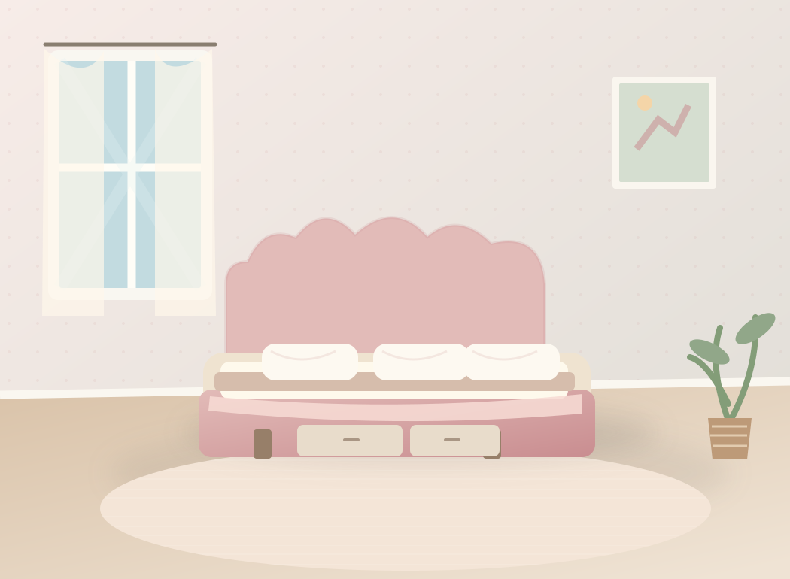
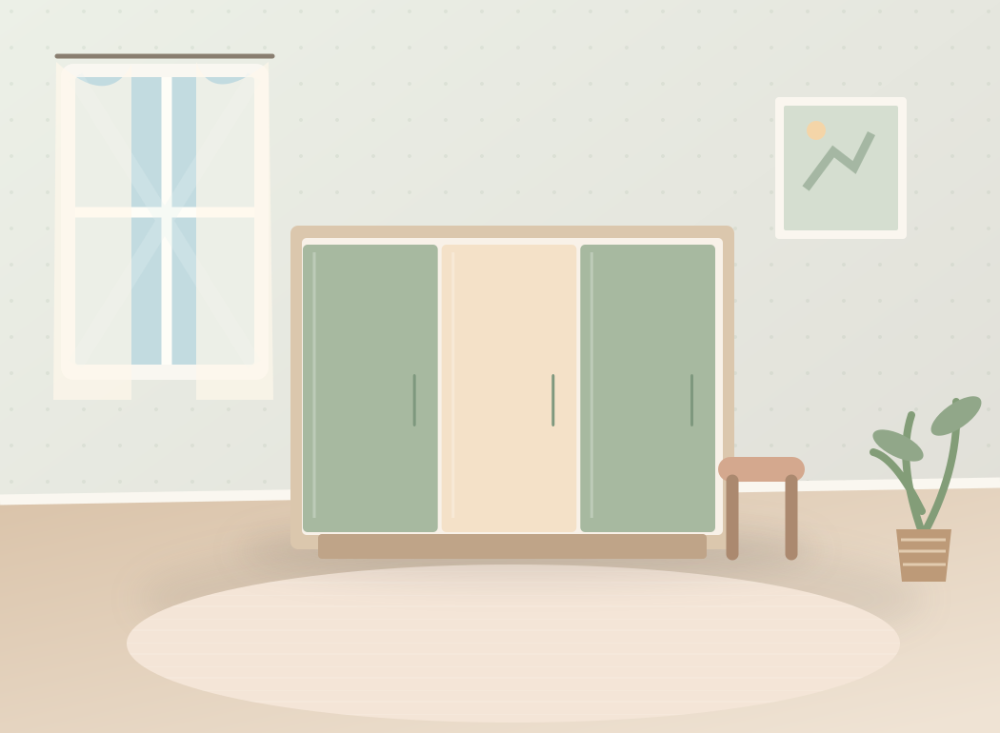
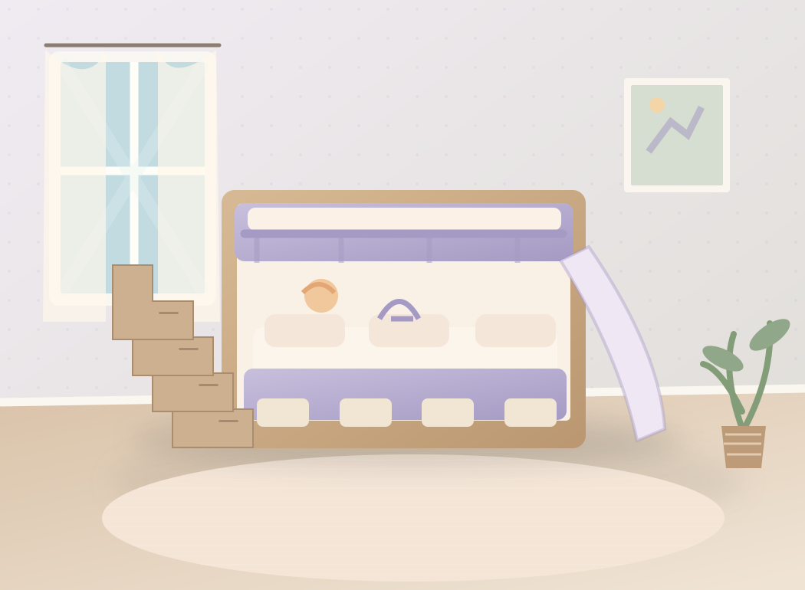
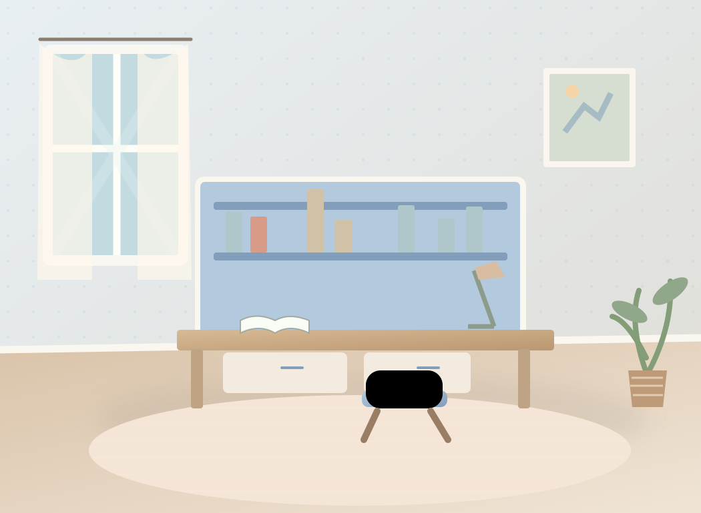
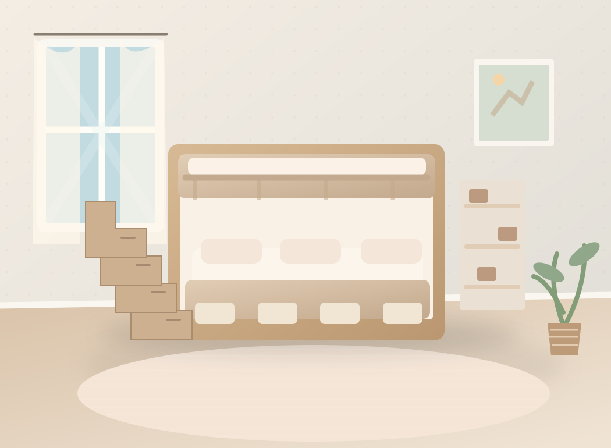

Выберите идею
Посмотрите концепции детских и отдельные модули.
Кроватки, шкафы, игровые модули и мини-гардеробные для детских комнат. Мебель, которая подстраивается под пространство, а не наоборот.

От уютного спального уголка до продуманной комнаты целиком — можно начать с одного предмета или собрать целое пространство.

СОН И ОТДЫХКровати, двухъярусные решения и мягкие формы

ХРАНЕНИЕГардеробные, секции и всё для порядка

ИГРАЗона приключений в пределах своей комнаты

УЧЁБА И ТВОРЧЕСТВОСтолы, полки и рабочие пространства
Когда у вещей есть своё место, в комнате остаётся больше пространства для игры, творчества и отдыха.

ДЕМОНСТРАЦИОННАЯ КОМПОНОВКАЦвет помогает комнате чувствоваться своей. Посмотрите, как один и тот же интерьер меняется от шалфейного до нежно-розового.
О цветах и материалах ЭСКИЗ · ЦВЕТ ПО ВЫБОРУ
ЭСКИЗ · ЦВЕТ ПО ВЫБОРУНеобязательно знать названия материалов и готовые размеры мебели. Достаточно рассказать о комнате и своих пожеланиях.
Посмотрите концепции детских и отдельные модули.
Расскажите о пространстве и возрасте ребёнка.
Добавьте модули, материалы и пожелания.
Скопируйте запрос и обсудите проект в VK.
Точные размеры, доступность материалов и стоимость рассчитывает мастерская после обсуждения.
Сообщество заявляет изготовление детской мебели по индивидуальным проектам. Возможность конкретной конструкции и размера необходимо уточнить у специалиста.
В нашей демонстрации можно подобрать палитру. Доступные цвета и материалы в производстве нужно согласовать с мастерской.
Пока нет подтверждённого прайса. Планировщик сформирует подробный запрос, а специалист уточнит цену, сроки и доставку.
Да, в планировщике есть локальный предпросмотр фотографий. Чтобы мастер получил изображения, их нужно прикрепить самостоятельно в сообщении VK.